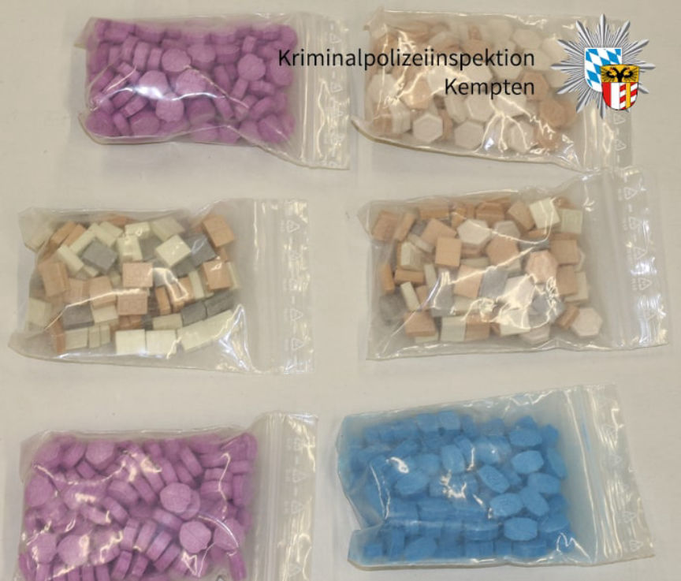
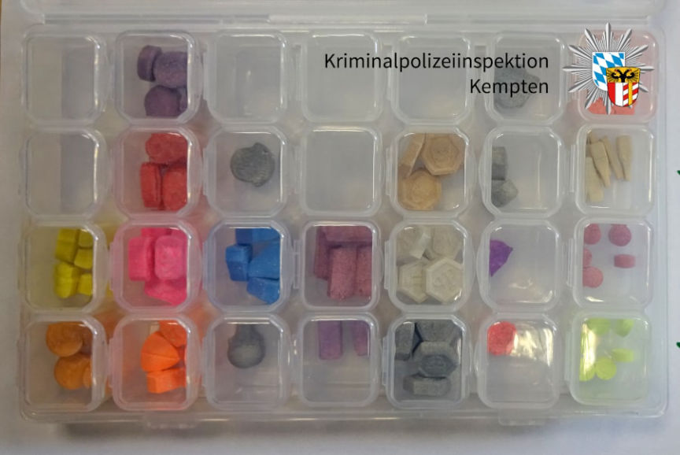
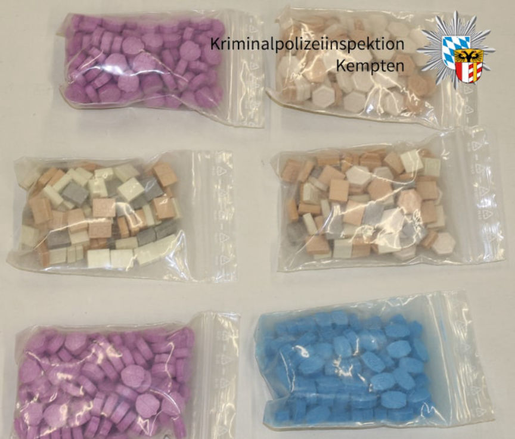
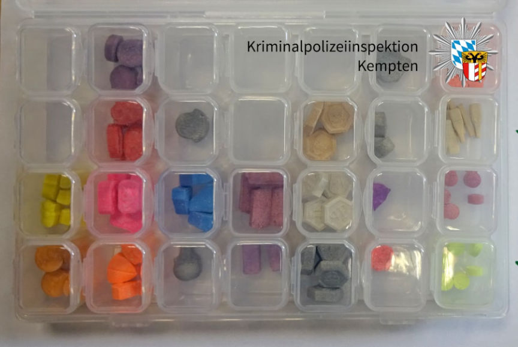

Bavarian Man Accused of Buying Drugs on the Darkweb
Police in Marktoberdorf, Bavaria, are investigating an alleged drug dealer suspected of buying and possibly selling “significant quantities of drugs on the darkweb.”
In a brief press release, police in Marktoberdorf announced an ongoing investigation into a suspected drug dealer’s “activities on the darkweb.” The investigation began in February 2020 when someone reported smelling marijuana from outside an apartment. When the police searched the apartment, they found more than seven kilograms of marijuana and 60,000 euros in cash. The police arrested three suspects (ages 25, 29, and 47).

During an investigation into the three suspects, investigators in Kempten identified a 35-year-old with an unspecified connection to the first three suspects. The police searched the suspect’s apartment in Obergünzburg and discovered more than two kilograms of marijuana, 600 grams of cocaine, and 1,200 ecstasy pills.

Police are currently investigating the 35-year-old’s activities on the darkweb. They are also looking into the connection between the 35-year-old and the original suspects. The defendant “obtained significant quantities of drugs on the darkweb,” according to the police. They believe the defendant also distributed the substances purchased on the darkweb.
“Persistent and meticulous investigative work gives us success like this,” a member of the police in Kempten said.
In a brief press release, police in Marktoberdorf announced an ongoing investigation into a suspected drug dealer’s “activities on the darkweb.” The investigation began in February 2020 when someone reported smelling marijuana from outside an apartment. When the police searched the apartment, they found more than seven kilograms of marijuana and 60,000 euros in cash. The police arrested three suspects (ages 25, 29, and 47).

Ecstasy pills seized during the apartment search
During an investigation into the three suspects, investigators in Kempten identified a 35-year-old with an unspecified connection to the first three suspects. The police searched the suspect’s apartment in Obergünzburg and discovered more than two kilograms of marijuana, 600 grams of cocaine, and 1,200 ecstasy pills.

More ecstasy pills seized during the search of the second apartment search
Police are currently investigating the 35-year-old’s activities on the darkweb. They are also looking into the connection between the 35-year-old and the original suspects. The defendant “obtained significant quantities of drugs on the darkweb,” according to the police. They believe the defendant also distributed the substances purchased on the darkweb.
“Persistent and meticulous investigative work gives us success like this,” a member of the police in Kempten said.